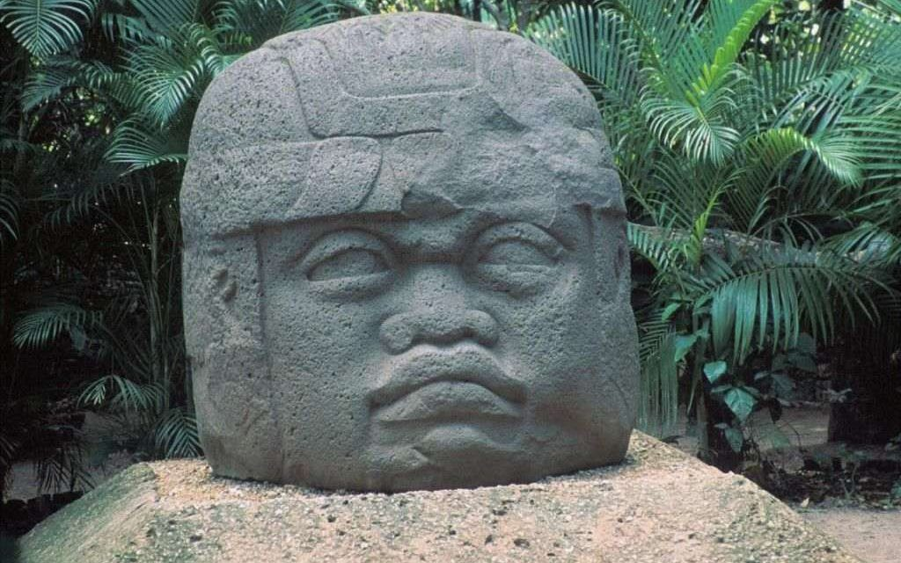
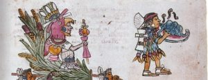
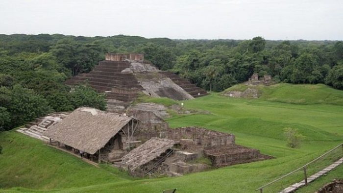
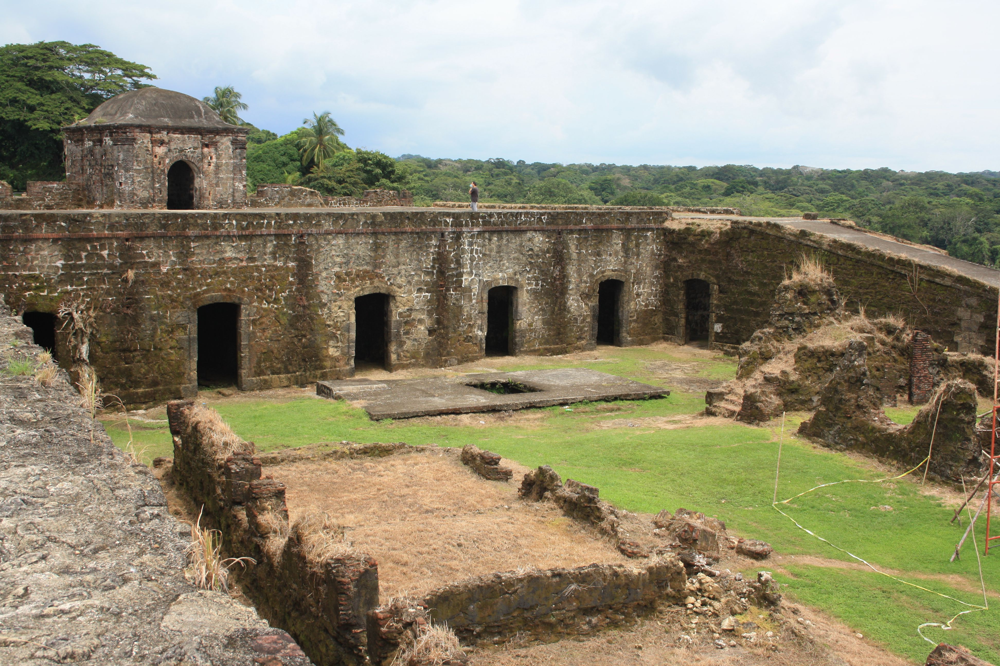
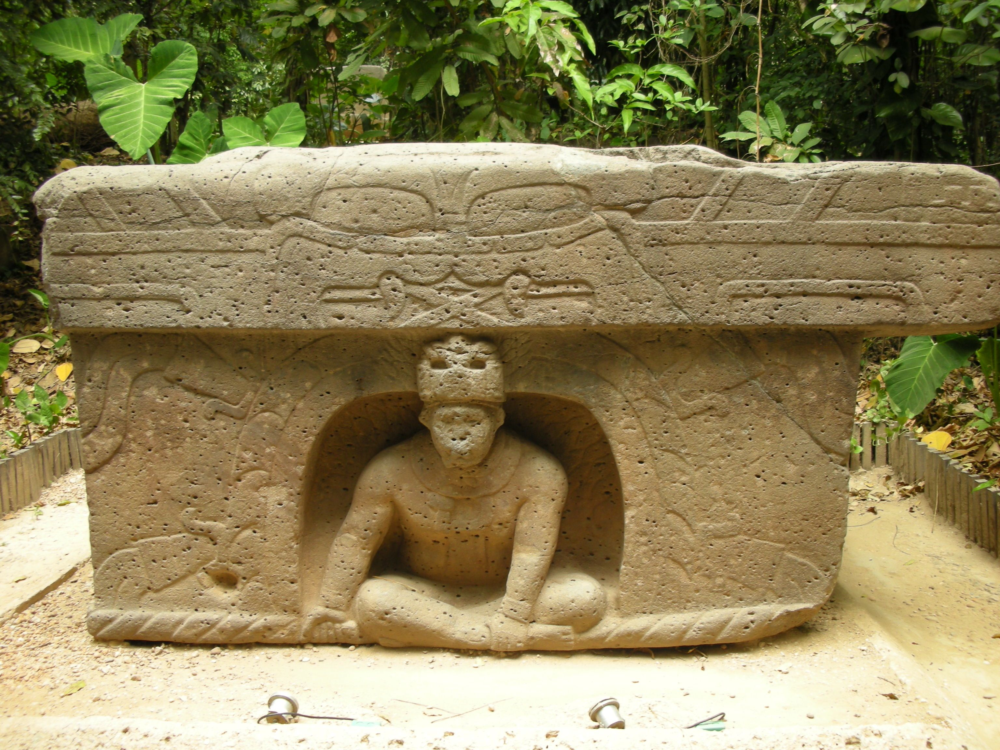
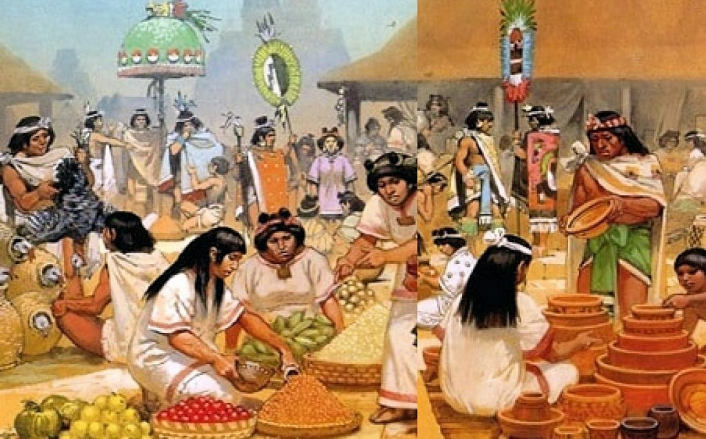

Cultura Olmeca
Los Olmecas, tambien conocida como "La cultura madre", fueron una civilización que habitaban gran parte del territorio mexicano, avanzando desde el sureste del estado de Veracruz hasta el oeste de Tabasco, durando el periodo preclásico. A esta cultura, la red de intercambios comerciales entre las distintas zonas de Mesoamérica contribuyó mucho a la difusión de elementos que identificaban y representaba esta cultura.

Organización política y social
Esta civilización creo su propio sistema político, el cual giraba en torno a la religión y el poder hereditario, Su organización estatificada estaba conformada por los gobernante divinos, la aristocracia y la gente común. Esto beneficio los principios de exclusion social y la jerarquización de los linajes.

Asentamientos
Una de las regiones donde esta cultura se establecio principalmente fue gran parte del sur de la Llanura Costera del Golfo de México, comprendida entre los rios de Papaloapan y Grijalva. Gran parte de todo el territorio en el que se establecieron fue selva tropical, la cual era conocida por su diversa fauna. Dentro de los animales vecinos más conocidos de los Olmecas se sabe del jaguar; algunas aves como quetzales y guacamayas; reptiles y mamíferos.

Historia
Sus inicios como civilización datan entre los años 3000 a.C y 400 a.C. Sus principales establecimientos eran San Lorenzo, La Venta y Tres Zapotes.
~San Lorenzo: Ubicado en Texistepec, en la cuenca del rio de Coatzacoalcos en Veracruz, es su centro más viejo.

~La Venta Considerado el centro ceremonial más importante de todos. Cuenta con la piramide más antigua de todo Mesoamerica.

~Los Tres Zapotes Siendo el último en desarrollarse, este es el más conocido ya que fue el único que hasta la fecha sigue de pie.

Economía
La economía de los olmecas estaba sostenido en su mayoria por los productos agricolas que ellos mismos cultivaban y que comercializaban entre otro pueblos. En su mayoria, la mercancia estaba constituida por maiz, frijol, calabaza y cacao, por mencionar algunos.


Notas
San Lorenzo fue saqueado durante el año 900 a.C, teniendo perdidas esculturales y monumentales.
La venta e distinguian por representar su trazo arquitectónico.
Las civilizaciones olmecas que se desarrollaron en tres zapotes fueron decadentes.